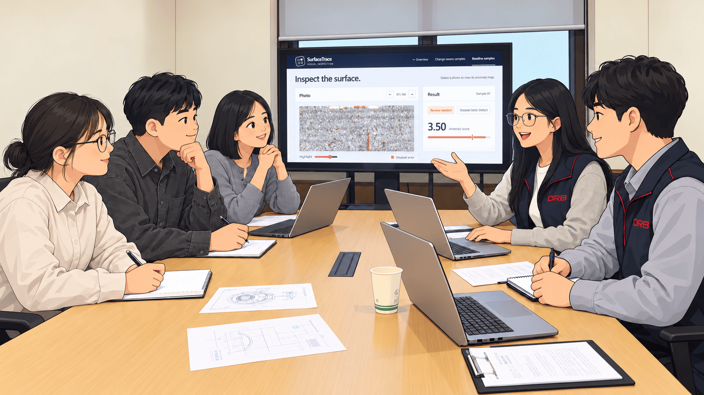
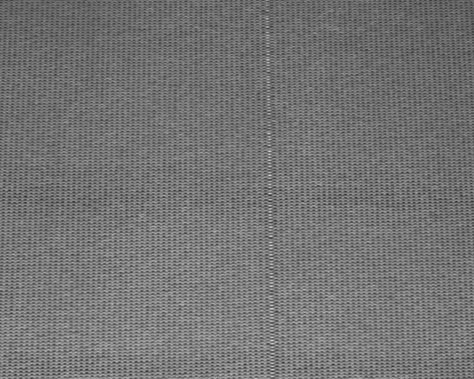
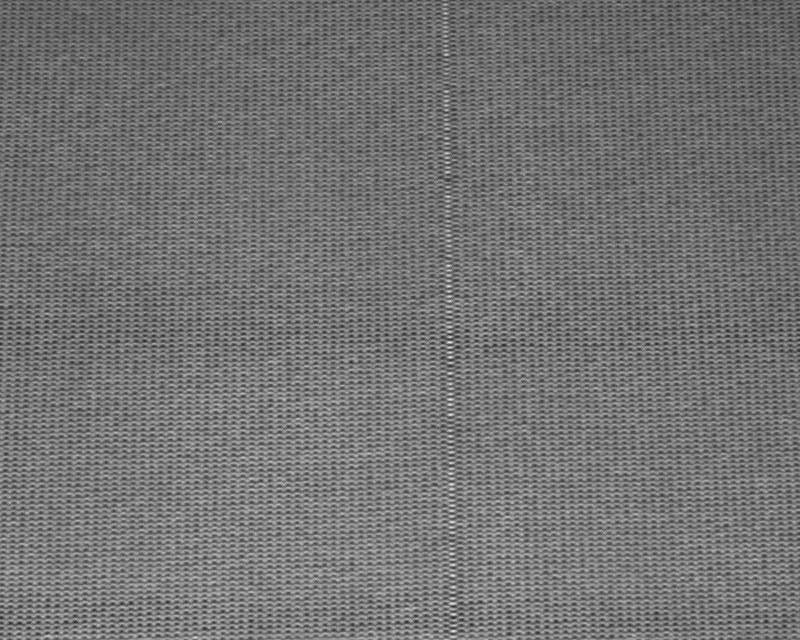
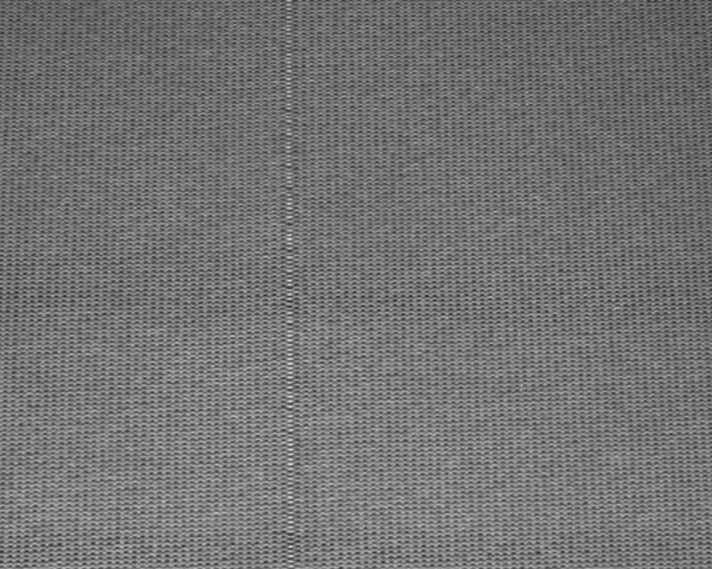

01
Build the reference
Collect normal patches.
TWO INSPECTION APPROACHES
A single-photo baseline and a change-aware experiment on production streams.
Explore the project ↓
01 / WORKING MVP
Labeled photos of cracks in the plastic embedding of electrical commutators.
Collect normal patches.

Align size and brightness.

Inspect the surface area by area.

Capture local texture and edges.

Find the closest normal match.

Highlight regions for review.
HELD-OUT TEST
64 photos · custom item-group split
FIELD FEEDBACK

Few confirmed defects · Changes reach the AI team late · Review time is limited
02 / CHANGE-AWARE EXPERIMENT
93,196 time-ordered knitting-line frames across 22 production scenarios.
FOUNDATION FEATURES
Few labeled defects
A pretrained DINOv2-S/14 model describes each image patch. Distance from reference patches produces a localized anomaly map.
Macro average precision · DINOv2 leads in 2 of 4 runs
REAL FRAMES


VISUAL CHANGE
Process changes may not be shared
Compare global image features across time, independently of the patch anomaly score.


REVIEW COVERAGE
Review time is limited
Rank frames by anomaly score, then keep selected photos at least 16 frames apart to avoid repeated checks of one event.
Frozen DINOv2 · same scorer and review budget




REVIEW WORKLOAD
Do not request eight checks by default
Ask for the two highest-ranked spaced photos first. If either is a defect or uncertain, release the remaining six.
New defect episodes: 26 / 90 in both.
Review outcomes decide the next request. They do not change the detector.
REFERENCE UPDATE · EVALUATED
A new appearance can trigger false alerts
We tested two reference changes: selecting startup frames without labels, and adding reviewed normal patches. Both need later-frame checks before use.
False alerts / 975 normal frames · candidate only

Adding reviewed normal patches removed false alerts but also hid defects on later frames.